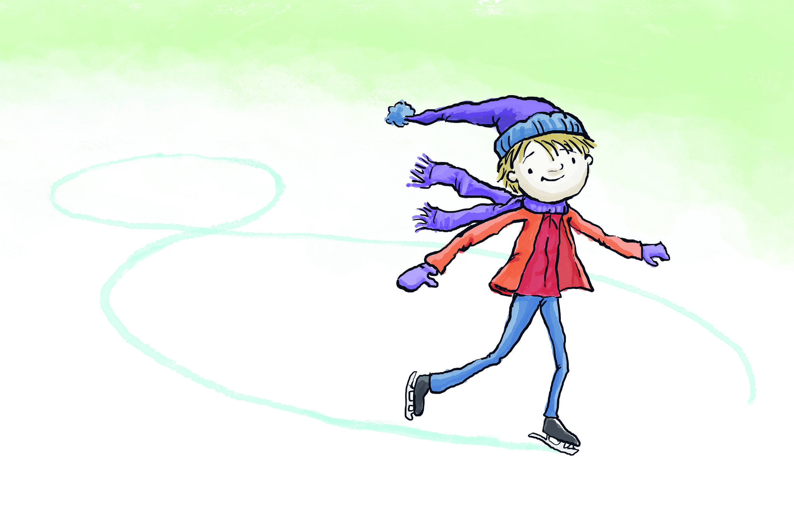

Introduction
Welcome to the first of thre tutorials about Exponential Random Graph Models (ERGMs). We finally got here! Were you looking forward? I hope you were because these models are super nerdy-cool!
Let’s get started with the art of fitting ERGMs!

Leveling machine
As in every respectable ice rink, before skating we make sure that the ice is smooth!
R Version
You need to have installed R version 4.2.0 and this tutorial is going
to check it for you. Please hit the Run Code button.
check_R()R Studio Version
You need to have installed RStudio version 2022.02.3+492 or above.
Let’s check by clicking Run Code:
check_RStudio()Packages
You need to have a few packages installed. Click the
Run Code to check. It will check whether you have the
required packages installed and will attempt to install any missing
packages in case there are any (or it will advise you to upgrade
sna4tutti).
check_pkgs()And now, take your computational enthusiasm and get ready to crunch some numbers!

Erdos Renyi
As we discussed in class, the ERGM model was not born overnight. There are a series of models that, step by step built on top of each other, layering down complexity. We can consider the Erdos Renyi model as the ERGM’s grandfather. AKA is one of the simplest ERG models that you can think of. It only checks the probability of observing a given network.
Let’s use the Florentine families’ marriage network. You should be already familiar with this one, so I won’t spend more time discussing it. Instead, let’s go to Florence in the Reinassance era!
Let’s just print the network, and check its class
florentine
class(florentine)We know that we have
- 16 nodes
- 20 edges
- it’s undirected, that it has
- 3 nodes attributes
- 1 edge attributes (not very useful though. You can check why I say
so, by running
network::get.edge.attribute(florentine, 'weight'))
Let’s also plot it, just to check it.
plot(florentine)We already know that the network has 20 edges, right? Well, we can also double-check in another way.
By running a summary of the formula (net ~ edges in this
case) we will insert into the statistical model, we have a quick and
straightforward way to measure the effect we will introduce into the
model.
edges, surprise, surprise, counts the number of edges.
Any other term you insert in an ERGM formula with summary()
will work the same way, providing the count of a certain measure inside
the network you are trying to explain (your Outcome variable).
TIP: it is a good practice to check what is in the real network
before assuming that a certain term is a useful parameter in the model.
Always use summary(formula) before running a model. You can
learn important information that will make your work easier.
Let’s try!
summary(florentine ~ edges)Since we know that we have 20 of them out of N*(N-1) possible edges, we can consider this term a proxy for density.
Yes, they are still 20 out of 16*15 possible edges. All is good here!
Ok, let’s estimate an ERG model! How? with the ergm
package from the statnet suite! We are going to use mainly
one function. Guess what? ergm!
Remember, we are testing the hypothesis that these old Italian privileged folks don’t marry by chance!
TIP: always call the ergm function with
ergm::ergm instead of attaching the library.
flomodel.01 <- ergm::ergm(florentine ~ edges)
(s1 <- summary(flomodel.01))Congrats! You run your first ERGM with an ER model! Here we go. Let’s understand the output together.
- The first row is the model specification: function + formula
- The second one is the model summary. AKA: the results we want.
- Then we have some measures of goodness of fit for model comparison
The model summary
The summary provides you with the list of results for the terms you
inserted in the model. In this case, we are only looking at the
probability of edge for formation. Hence, there is only one term:
edges. Of course, in a more complex model, your summary
will be much longer than this one.
What do we know about each term?
- the estimate
- the standard error
- the MCMC %
- the z value
- the Pr(>|z|) the probability of our estimate to be larger than the z value, or P-value.
To interpret our results, we need to focus on three of these measures:
- the estimate or coefficient will tell us the intensity of the effect we measure. We need to make a linear transformation and turn it into odds ratios or probabilities to understand it.
- the error will tell us the accuracy of our estimate. If the error is too large, we cannot trust the estimate.
- the p-value will tell us the chances that replicating a large number of networks similar to ours, we observe the same features. In this case, the likelihood that we will observe 20 edges in each of the 1000 networks with 16 nodes. We want this probability to be small. I know it can be counter-intuitive. Bare with me. If the p-value is large, it means that most networks with 16 nodes have 20 edges. This would make our Florentine family network not interesting. If the old Florentine dudes behave as a random network, why would we waste our time with them? We want them to be special! We want our p-value to be small!
Edges is an endogenous or structural term. So again, we are just checking on the probability that those 20 edges are not by chance. Could they have been between any family? In other words: Do they marry randomly? Usually, people marry for a reason. Love or some other, but it’s unlikely that they marry in a random way.
How about these old Florentine folks? Well, according to the model results, they did not marry by chance either. P-value is < 0.0001. Hence there is a high probability that we can reject the null hypothesis of marrying by chance. Love is not blind, and when it is the love of millionaires, it has even better sight!
What about the coefficient? Without estimating odds ratios or probabilities, for now, the negative sign means that the network is sparse: there is a small probability of forming links. In fact, the probability of these edges is 16% (we will see how to estimate this later). These old Florentine dudes do not marry by chance and do not marry that easily either. These weddings are well thought out and kind of exclusive. It’s not for every family to marry into the club!
One more crucial thing: Look at the model summary. Can you see that
it says: Maximum Likelihood Results?
Well, that’s because here, you only have one dyadic independent term, and the model can be estimated without requiring MCMC chains! More about this later, but pay attention to details already!
Finally, the variable s1 stores the summary. It is
helpful to print results in the way you like better/you need, so keep it
in mind!
The GOF for model comparison
You need to pay attention to the two measures of goodness of fit at this stage: AIC and BIC.
These two related measures MEAN ABSOLUTELY NOTHING if you have only one model. They are helpful only in choosing the best model between two or more.
- You always choose the model with the smallest AIC and BIC, but with the terms that interest you.
- Don’t trash a more informative model (higher number of terms) if it performs less good than a less informative one!
In the following tutorials, we will explore the appropriate GOFs for ERGMs. Feel free to ignore the Null Deviance and the Residual Deviance.
Simulation
We said that we are checking on the probability that our observed network is different from random others built using the same parameters but not having the specific features we observe in our real network (null distribution). This means that we are comparing our observed Florentine network with many other simulated ones with the same parameters: Nodes and Edges.
In Network Science, a random network with a fixed number of nodes and edges is an Erdos Renyi one. Let’s try!
plot(igraph::erdos.renyi.game(16, 20, type = 'gnm'))This network we just plotted is really similar to the Florentine one,
but still not quite the same. We could manually test our hypothesis by
generating 1000 of these using the
igraph::erdos.renyi.game() function.
Often, we have to compare our observed network in the absence of
standard parameters (not every model has an ad hoc algorithm like the
Erdos Renyi). To do so, in the future, we can simply use the function
simulate() that will work with each and every ERGM
formula.
flomodel.01 <- ergm::ergm(florentine ~ edges)
simflo <- simulate(flomodel.01, burnin = 1e+6, verbose = TRUE, seed = 9)
plot(simflo)In this case, we have complete control over the parameters since we
explicitly ask the function to simulate something with exactly the same
terms as our flomodel.01.
Enough with this easy toy model! we are ready for something juicier!
P1
The ER model ran as an ERGM is cute, but it explains reality to a very small extent. In this section, we will take a look at the P1 that is considered ERGM’s father.
While the ER model can also be applied to undirected networks since it only considers whether there are ties or not (not checking on what kind of ties), the P1 checks on the kind of ties, and for this reason, it was designed for a directed network. We are going to use now the Sampson data that you are also already familiar with.
I’m just going to remind you that it is an ethnographic study of a New England monastery’s community structure by Samuel F. Sampson. Social relationships among a group of men (novices) who were preparing to join a monastic order.
Let’s quickly explore it.
sampson
plot(sampson)This subset of the Sampson data only considers whether the monks like each other (directional edge) or not (no edge). We know it’s 18 nodes and 88 edges directed network with no loops and two attributes loaded in the network format.
The P1 model checks on the probability that the observed network is not random, but that it’s the outcome of some social dynamic focusing on:
- edges formation (as the ER),
- sender of the tie,
- receiver of the ties
- and the mutuality between sender and receiver.
We are going to use three new ERGM endogenous terms:
senderreceivermutual
Let’s specify our model and print the results! This might take your computer a few seconds to process, so be patient.
set.seed(1212121)
P1 <- ergm::ergm(sampson ~ edges + sender + receiver + mutual)
summary(P1)Waw, what’s this output? It’s really long! Well, some terms that you
specify in the ERG models estimate one statistic summarizing the entire
situation in your network. edges and mutual do
so in this case. Some other terms such as sender and
receiver compute a statistic for every single node in the
network.
That’s why this output is so insanely long. When you choose the terms for your model, consider this because commenting on every node in a network with 200 of them is no fun.
sender and receiver look at the probability
that every single connection is not random: an expression of likelihood
between 2 and 5 is completely different from one between 5 and 2, as
much as one between 12 and 18. This kind of approach is perfect for an
ethnographic study that aims to understand specific social dynamics in a
small community. It would not be very helpful for explaining the
behavior of people in a Twitter network.
Note that not every node is in the output of the model, though. Node number one is missing. This is not a mistake. Removing one node is necessary to avoid a linear dependency between all the others. Node one constitutes the reference category, and every other result has to be compared to node one. Do you remember that we discussed that in the Bootcamp?
Have you noticed how much time and computational power it takes to
run this super small model? That is because mutual is an
endogenous dyadic dependent term, and the model is running an MCMC
simulation for you.
This time you can read
Monte Carlo Maximum Likelihood Results in your model
summary.
ER and P1 consider only structural (endogenous) effects. When we run them, we don’t consider any attribute. But is no longer going to be the case from the next section and afterward since explaining social reality requires way more sophistication than this :)
ERGM
An ERGM (pronunciation “eurcoom” “eurghum”) is a statistical tool to assess causality using hypothesis testing when the outcome variable is a network.
So far, we have fitted an ER and a P1 model. We fitted using the
ergm::ergm function, but we can do a lot more with this
function.
While the ER and the P1 only employ few mostly dyadic independent
endogenous terms (but the dyadic dependent mutual), the
ERGM model allows you to test your hypotheses with a wide array of
terms.
This class of models is employed to assess whether the structure of a network and its attributes are random or whether they originated by some sort of identifiable relational phenomena.
The observed data is compared to simulated data (like you do when you run an experiment with a treatment and a control group), so you need to make sure that your simulated data (control group) is truly comparable to the treatment group (the real network). The parameters you insert in the model set up the simulated reality of the control group (Sim City). If your simulated reality is too far from the real network, your model will simply fail (technically speaking, it will not converge).
This is a bit complicated, right? Let’s take it step by step, starting from inserting exogenous effects in the model since we haven’t done that yet!
Let’s get crunching some numbers!
Dyadic Independent Terms
An ERG model is all about finding the best ‘dress’ to fit our data.
The terms we employed so far, but mutual only look at
independent effects since the probability of observing them does not
depend on the existence of other ties but only on the properties of the
individual nodes. But, even still focusing only on the effects that do
not involve edge dependencies, there are many more options. We need to
explore more ERGM terms. If you type in your RStudio
console search.ergmTerms, it will appear to you the help
file. Now we focus on the dyadic independent terms only, that you can
print out using the following line of code:
ergm::search.ergmTerms(categories = 'dyad-independent')Sixty terms correspond to this description! Some of them are endogenous, but others are exogenous. Exogenous terms allow inserting attributes in the model. Usually, they are dyadic independent since the presence or absence of attributes should not depend on ties.
Several terms allow you to insert exogenous variables (attributes) in the model.
Let’s experiment with one of the most popular:
nodecov.
ergm::search.ergmTerms(name = 'nodecov')The line of code above prints out all you need to know about
nodecov. In short, this term allows you to insert in the
model the hypothesis that tie formation/absence is affected by high/low
values of the attribute passed on the term. Just like a numeric variable
in a regression model, right?
Let’s test it with the Florentine marriage network and one of its
attributes, wealth. Let’s also assume that we are nesting models to
explore our network further. Hence, we build on
flomodel.01.
flomodel.01 <- ergm::ergm(florentine ~ edges)
flomodel.02 <- ergm::ergm(florentine ~ edges + nodecov("Wealth"))
texreg::screenreg(list(flomodel.01, flomodel.02))In this case, it is helpful to look at AIC and BIC for model comparison According to
- AIC Model two is better.
- BIC Model one and two are roughly the same, with model two a tiny bit better
The nodecov term’s result and say that it is likely that
rich families are mutually married.
You read the results exactly like a logit model, so check the GLM
tutorial in the Bootcamp package if you don’t remember
it.
For what concerns edges you can interpret it as the
model intercept.
We can also simulate flomodel.02.
flomodel.02 <- ergm::ergm(florentine ~ edges + nodecov("Wealth"))
simNodecov <- simulate(flomodel.02, burnin = 1e+6, verbose = TRUE, seed = 9)
plot(simNodecov)This simulation represents our baseline random model, our control group in the experiment, our null hypothesis. The simulated data originated by the same features but does not show the remarkable qualities of our observed networks. There are families, and they marry, but randomly.
When we use nodecov, we compute the correlation of a
vector that expresses the number of Liras that each family owns and the
edge list of the network.
There are other ways, still in the dyadic independent universe, to check on the possibility that wealth influences marriages in old Florence.
One term that can help us do that is absdiff.
ergm::search.ergmTerms(name = 'absdiff')This term computes the mixing matrix that calculates the absolute difference between the amount of money each family owes. Thus, rather than checking whether being rich influences the probability of marriage in old Florence, we check the likelihood of being equally rich (or equally non-rich).
Should we try this out?
flomodel.01 <- ergm::ergm(florentine ~ edges)
flomodel.02 <- ergm::ergm(florentine ~ edges + nodecov("Wealth"))
flomodel.03 <- ergm::ergm(florentine ~ edges + absdiff("Wealth"))
texreg::screenreg(list(flomodel.01, flomodel.02, flomodel.03))From model three results, we also see that it is likely that being equally rich influences the probability of getting married to each other.
The AIC and the BIC comparison also show that model 3 is better than the other two.
Ok, let’s nest a fourth model where we put these two terms in the same model. Can you do this for me?
Please re-run all of them and print them out next to each other.
flomodel.01 <- ergm::ergm(florentine ~ edges)
flomodel.02 <- ergm::ergm(florentine ~ edges + nodecov("Wealth"))
flomodel.03 <- ergm::ergm(florentine ~ edges + absdiff("Wealth"))
flomodel.04 <- ergm::ergm(florentine ~ edges + nodecov("Wealth") + absdiff("Wealth"))
texreg::screenreg(list(flomodel.01, flomodel.02, flomodel.03, flomodel.04))Ok, do you see that the story in model 4 is changed? This is the beauty of nesting models!
Even if in models two and three, our terms are significant, they are not anymore when we put them together. Also, the AIC and BIC are lower than the model 3 ones.
This could be because we are trying to estimate two effects that are too similar and interfere with each other. Remember, one estimates a vector and the other a matrix, but the substantive meaning is not that different.
In general, we know that model 4 is not a good fit for our network. We are going in the wrong direction, and when this happens, you simply discard that option and test others. But the good thing is that we checked! If we did not run model 3 and jump to model 4 (as I did in the ERGM 2 class), we would not have known that being equally rich is a better explanation than being just rich! It is, in fact, unlikely that people don’t marry at all because they are not rich enough!
That’s how much you can fine-tune your hypothesis using ERG models! Isn’t it awesome? I answer: it is. But it is also quite challenging, and unless you know what you are doing, you will be entangled in the almost unlimited options that this class of model offers you!
One last thing. Can you simulate the control group of model four for
me? Use seed = 8 and a burn-in of 1e+6. We will discuss
what a burn it is next week!
flomodel.04 <- ergm::ergm(florentine ~ edges + nodecov("Wealth") + absdiff("Wealth"))
simNodecov <- simulate(flomodel.04, burnin = 1e+6, verbose = TRUE, seed = 8)Conclusion
Enough for today! Now you can go out an enjoy non-simulated reality without comparing it to a control group… maybe…